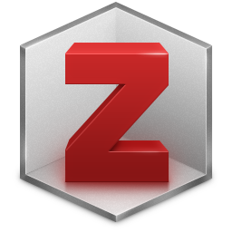

¿Qué opciones tenemos a la hora de manejar nuestra biblioteca de artículos, libros y vídeos? Un gestor bibliográfico es algo que en algún momento tanto investigadores como estudiantes deberían de saber manejar. En un mundo donde la información y desinformación crece de manera exponencial no puedes arriesgarte a perder en tu disco duro “aquel artículo que explicaba muy bien el constructo que quería usar para…”.
Así pues, vengo a poner ente vuestros ojos tres opciones, dentro de las miles, que he probado a lo largo de mi carrera y que me he permitido revisitar recientemente para ver que tal han evolucionado.
Zotero, 0€, Windows/Linux/MacOSX

Zotero, para mí, es el más sencillo y el primero que pude probar. Está basado en dos programas que funcionan. Uno, el gestor bibliográfico como tal, que se instala en tu sistema operativo de elección. Y otro que es el plugin de Firefox, que sirve para capturar el contenido de la web e incluirlo directamente en tu base de datos bibliográfica. Muy útil para añadir vídeos de Youtube, papers en formato HTML o cuando se navega por ScienceDirect o JSTOR, añadir cualquier artículo enlazado con un solo clic.
Tiene unas capacidades de sincronización un poco reducidas, pues está limitado a 100MB. Aunque teniendo en cuenta que estas solo se refieren a los datos, en formato texto, podemos hablar de espacio de sobra.
Hace poco a añadido la capacidad de citar desde cualquier editor de texto, aunque su fuerte sigue siendo Word y aún no está soportada la versión 2016.
Mendeley, 0€, Windows/Linux/MacOSX
Mendeley pretende añadir algo más a la mezcla. Es un salto cualitativo desde Zotero en cuanto a la posibilidad de anotar y subrayar PDFs, para después compartirlo con tus compañeros de investigación o institución. Sin embargo, queda por detrás en la sencillez que tiene Zotero para añadir contenido.
Esta aplicación tiene un importador web, multiplataforma (no solo con Firefox), pero nunca he conseguido que el contenido importado capture los metadatos de manera adecuada y toca siempre volver a darle otra vuelta para arreglarlos. Su sincronización es mucho mejor que la de Zotero. Aquí no solo compartes los datos de la base de datos entre diferentes máquinas sino también la biblioteca PDF. Para ellos tienes acceso a un espacio de 2GB gratis, muchos más, si pagas.
Otro de sus fuertes es que si es necesario, no necesitas instalarte ningún programa para ojear algún PDF en el ordenador de la biblioteca de tu universidad. Tienes un entorno web perfectamente integrado y fácil de usar.
Esta es la opción que estoy usando actualmente, ¿la razón?, es bien sencilla. La sincronización automática con Bibtex, un formato que permite insertar citaciones en documentos con LaTeX, aunque esa es otra historia, que debe ser contada en otro momento.
Papers, 59€/34€, Windows, MacOSX
Aunque es la única opción de pago vale cada euro que se pueda poner en ella. Para empezar a diferencia de las anteriores, Papers 3 ya incluye la búsqueda, descarga e indizado en base de datos desde dentro de la aplicación. Si configuras el proxi de acceso a través de la universidad o si la usas desde dentro de tu institución es un verdadero placer.
Al descargar un PDF y añadirlo desde nuestro disco duro, Papers, compara los metadatos del documento con la de las bases de datos bibliográficas más conocidas y devuelve los datos corregidos, siempre preguntándote si quieres sustituirlos por los que el documento te ofrece por defecto. Es sorprendente ver como al instante, cientos de PDFs se reordenan y detecta duplicados.
¿Tienes iPhone o iPad? Tu biblioteca se va contigo, puedes seguir trabajando con tus PDFs allí donde vayas, aunque en pantalla más pequeña.
Si aún así os puede parecer cara, podéis aprovechar vuestro status de estudiante y recibir un descuento que la deja al suculento precio de 34€, si os vais a dedicar a investigar es poco dinero comparado con el tiempo que os podéis ahorrar. Sin duda alguna es mi segundo gestor bibliográfico a la espera de dar el salto a un disco duro más grande, porque la biblioteca de Papers puede volverse incontrolable.
Conclusión
Mi conclusión como siempre es que tratéis de tener un equilibrio entre lo que necesitáis y lo que os ofrece el software. Estos programas son fáciles de usar y muchos permiten portar la información de uno a otro con un par de clics.
Así os recomendaría empezar tal vez por Zotero. Si necesitáis o usáis mucho las anotaciones o queréis tener un mayor control sobre la citación de fuentes bibliográficas o mover vuestros PDFs entre ordenadores ya podéis dar el salto a Mendeley. En última instancia si tenéis problemas de dinero, Papers es un toque de atención a cualquier cartera, pero si no lo tenéis os diría que lo comprarais ya, es el más fácil de usar y potente de los tres, y vuestros trabajos académicos lo agradecerán.
Manteneros expectantes ante la serie de entradas de “Así lo hago yo…”, hablaré de editores de texto, LaTeX, Markdown, citaciones y trabajo con estadística.